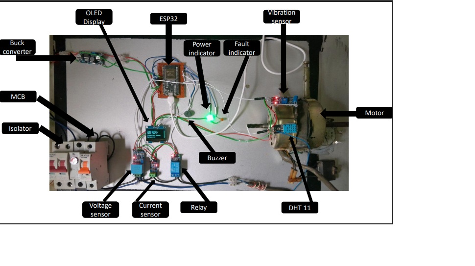
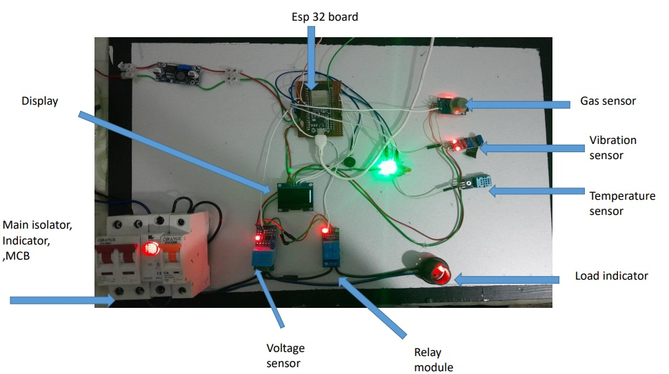
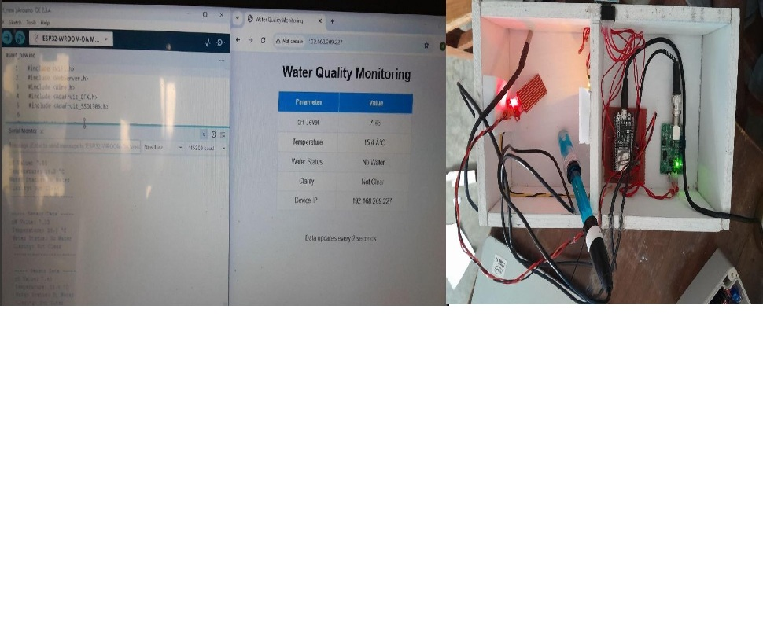
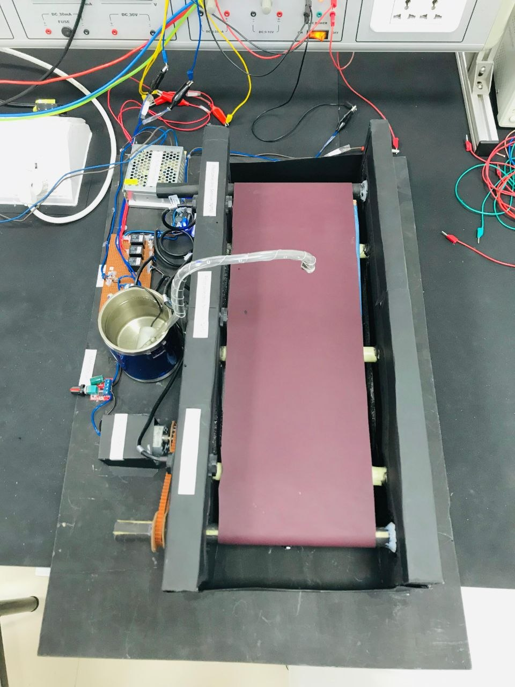

Hello, I'm
Dinuka Randima
Electrical & Electronic Engineering Technology Undergraduate
Passionate about embedded systems, industrial automation, and IoT technologies. Dedicated to developing innovative engineering solutions.
About Me
To gain practical engineering experience in electrical and electronic systems through an internship opportunity. I aim to apply my knowledge in embedded systems, industrial automation, and IoT technologies while developing professional skills and contributing to innovative engineering solutions.
Academic Qualifications
[BET (Hons)] in Electrical and Electronic Technology
Faculty of Technology, Rajarata University of Sri Lanka
G.C.E. Advanced Level (Technology Stream)
St' Aloysius College, Rathnapura
Z-Score: 1.516 | District Rank: 56 | Island Rank: 1003
Work Experience
Election Commission of Sri Lanka
Casual Employee (Election Support Staff)
Assisted with administrative and document handling tasks during the election process.
Technical & Professional Skills
Hardware & Platforms
- ESP32
- Arduino
- Sensors and Actuators
- Motor Control Systems
Programming
- Arduino Programming
- Embedded Systems Programming
- Ladder Programming
Software Tools
- Proteus Simulation
- AutoCad
- SolidWorks
- Microsoft Office
Personal Competences
Featured Projects

Smart Industrial Motor Protection & Predictive Maintenance System
- Designed an ESP32-based system for monitoring motor conditions.
- Implemented real-time monitoring for voltage, current, and temperature.
- Developed a fault detection system for early failure detection.
- Created a web-based monitoring dashboard using IoT technology.

Smart Industrial Safety System using ESP32
- Developed an IoT-based industrial safety monitoring system using ESP32.
- Integrated sensors to detect hazardous conditions in industrial environments.
- Implemented real-time monitoring and alert system for worker safety.

Water Quality Monitoring System using ESP32
- Developed an IoT-based water quality monitoring system using ESP32.
- Measured pH level, temperature, and water clarity using multiple sensors.
- Displayed real-time data on OLED display and web interface for remote monitoring.

PLC Bottle Filling Automation System
- Designed and simulated an automated bottle filling process using PLC.
- Implemented ladder logic programming for industrial automation.
Achievements
2022 Invention Competition - Merit Award
Presented an innovative project in a school-level invention competition at St' Aloysius College, Rathnapura.
Get In Touch
I am currently looking for an internship opportunity. Whether you have a position available or just want to say hi, I'll try my best to get back to you!
Call Me
+94 70 374 5001
Email Me
Location
820/C, Ekneligoda, Kuruwita, Ratnapura.